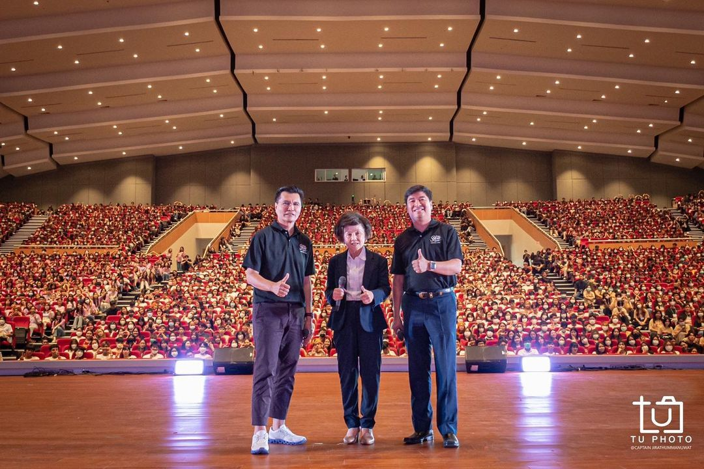

Click here to see more information
4 สิงหาคม 2566
ช่วงเช้า
มีการเชิญรุ่นพี่ขึ้นมาพูดคุยในเรื่องการอยู่ในธรรมศาสตร์
มีการแสดงจากรุ่นพี่
มีแขกรับเชิญพิเศษคือ พี่ทิม พิธา ลิ้มเจริญรัตน์
ช่วงกลางคืน
Fill Your Thammasat spirit
การแสดงแสงสีเสียง ประวัติศาสตร์ธรรมศาสตร์
คอนเสิร์ตจากศิลปินวง ATLAS